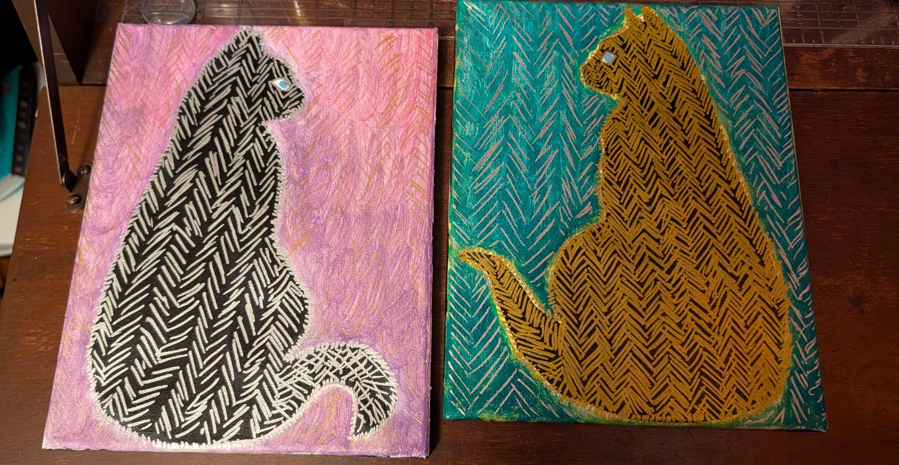
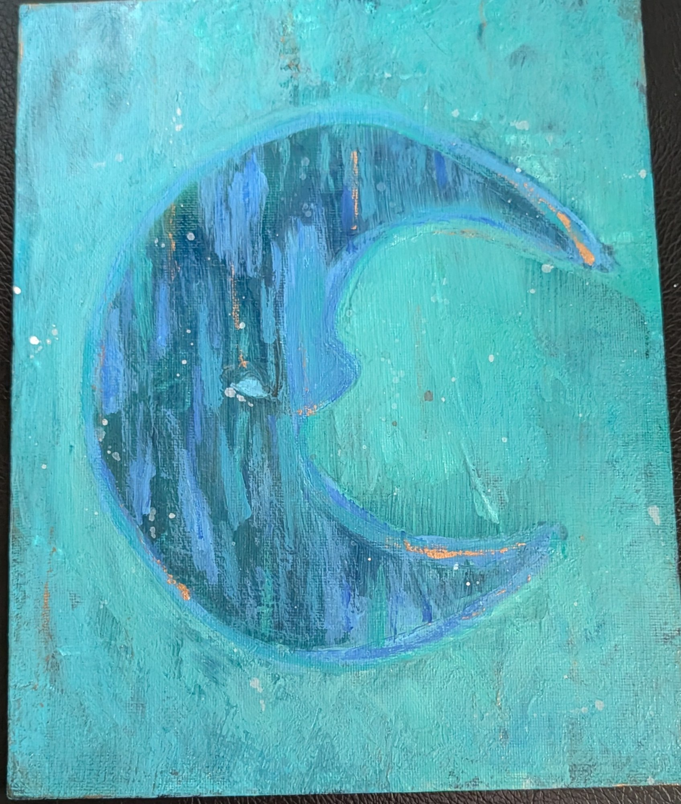
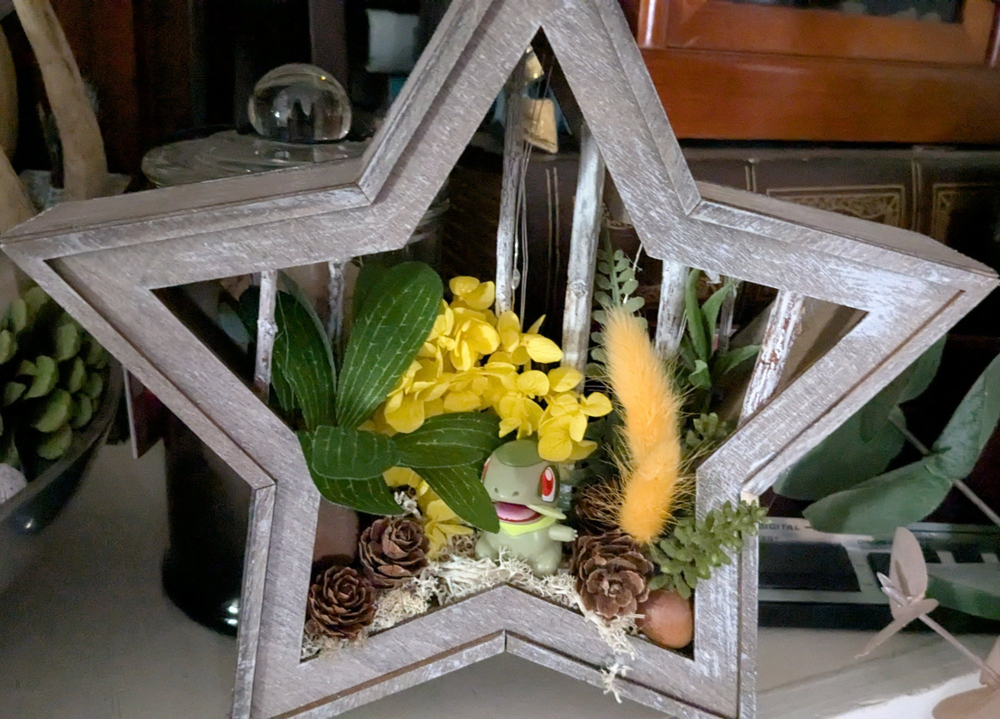
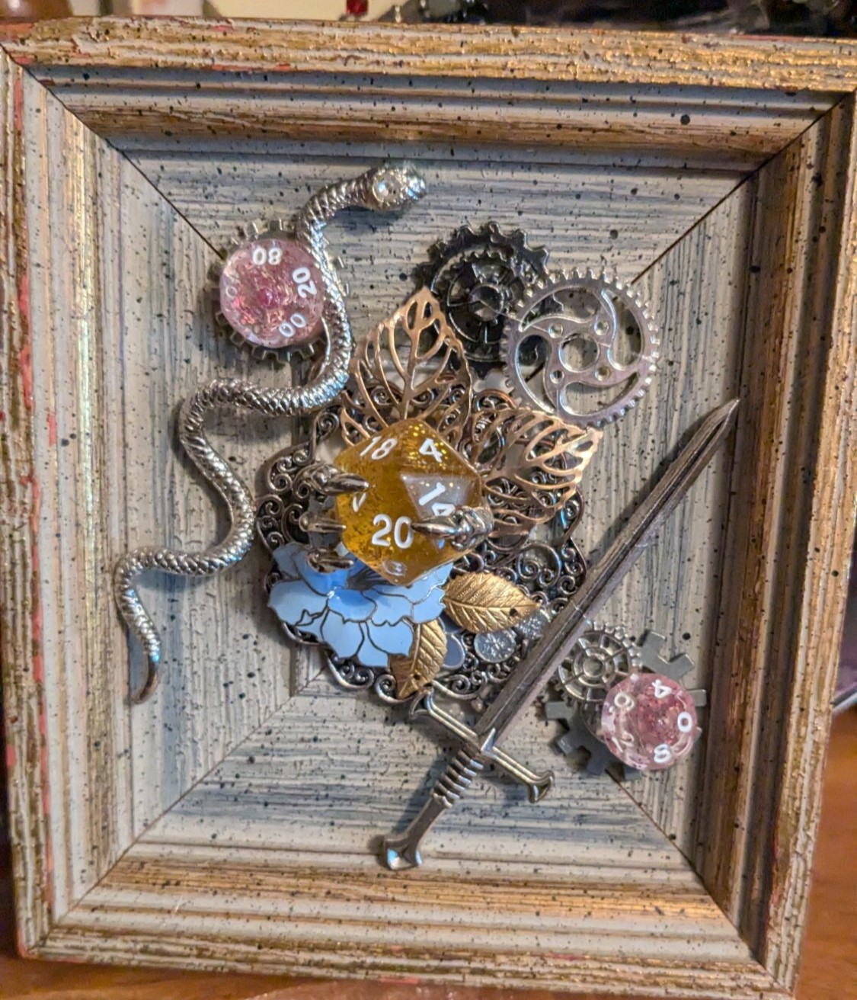
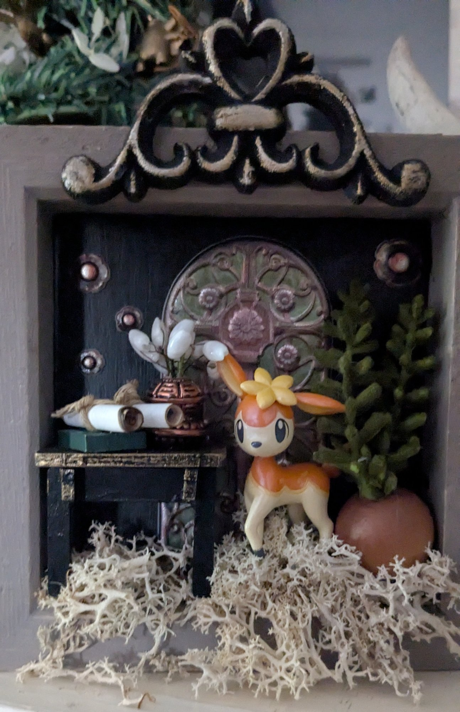
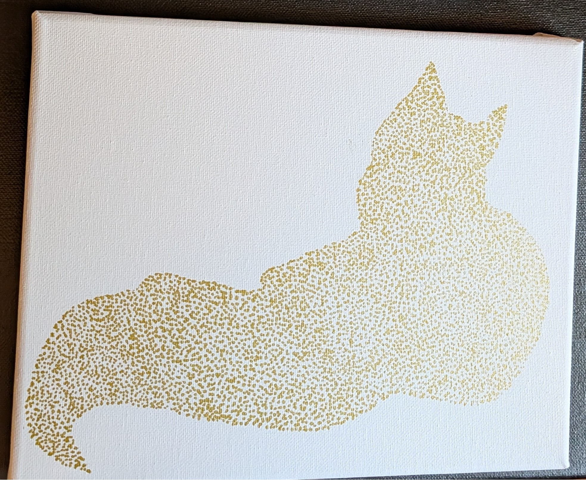

Moonlit Guardian
Acrylic & silver filigree on canvas — mixed media

The Watcher
Acrylic on canvas — teal, cobalt & gold

The Parliament
Acrylic on wood slice — three studies in owl

Tessellated Cats
Acrylic on canvas — a study in pattern & silhouette

The Critical Roll
Found object assemblage — framed mixed media

The Scholar's Garden
Shadow box assemblage — found objects & botanicals

Gilded
Gold stipple on canvas — a study in absence and presence